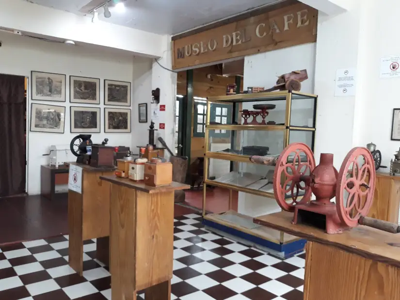
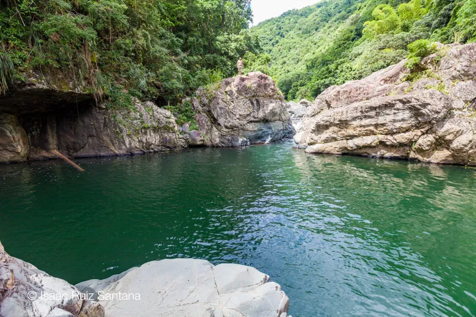
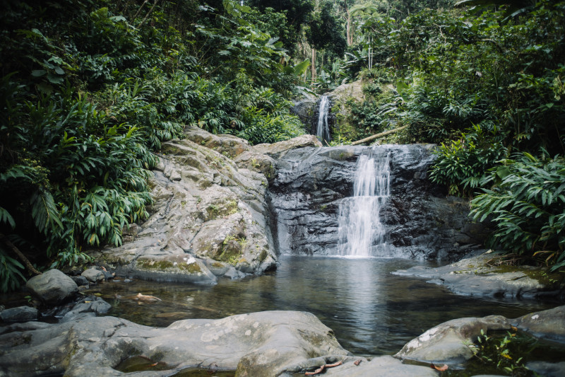

Museo del Café de Puerto Rico
Al visitar el pueblo de Ciales, déjese llevar por el rico aroma del café hasta el Paseo Aroma de Café. Visita el Museo del Café de Puerto Rico y conoce la historia local y regional de este producto como expresión de la historia general de la isla y del desarrollo histórico del café en la economía de Puerto Rico, que reafirma nuestro carácter nacional, cultural y colectivo dentro de la procesos históricos relacionados con el café puertorriqueño. En estas instalaciones encontrará una vasta colección de antiguos molinillos de café. También cuentan con piezas rústicas utilizadas por nuestros antepasados para el despulpado, secado y tostado de los granos de café. La colección de Casa Pintueles es única. El Museo del Café conserva documentos relacionados con la actividad empresarial de esta empresa exportadora desde 1800 hasta finales de 1900.
Pueden visitar el Museo del Café de Puerto Rico en:
- Dirección: 42 Calle Palmer, Ciales, 00638
- Número telefónico: (787)-313-0925
Charco El Morón
Forma parte del Río Toro Negro. Es una charca de gran tamaño y profundidad. Disfrutarás del ambiente entre montañas, la vida, la fauna, la flora. Ruta río arriba y vereda.
Pueden visitar en:
Paseo Lineal Juan Antonio Corretjer

El Paseo Lineal Juan Antonio Corretjer en Ciales es un área recreativa para ciclismo, caminar y disfrutar de su preciosa vista. El paseo lineal se nombró en honor al famoso poeta puertorriqueño, Juan Antonio Corretjer. Tiene una preciosa vista al Río Grande de Manatí.
Pueden visitar el Paseo Lineal Juan Antonio Corretjer en:
- Dirección: 9G3J+GJW, Paseo lineal juan anotio, Cll Corretjer, Ciales, 00638
- Número telefónico: (787)-242-8720
Cascada Las Delicias
Para llegar a estas cascadas encantadoras, tendrás que conducir por los caminos ventosos del pueblo de Ciales y subir hasta el pueblo aún más alto de Jayuya. Las cataratas se encuentran dentro de los terrenos del Bosque Estatal Tres Picachos, y son fácilmente accesibles después de una corta caminata.
Pueden visitar la Cascada las Delicias en:
- Dirección: 6FH6+VQX, PR-533, Jayuya, Ciales 00664